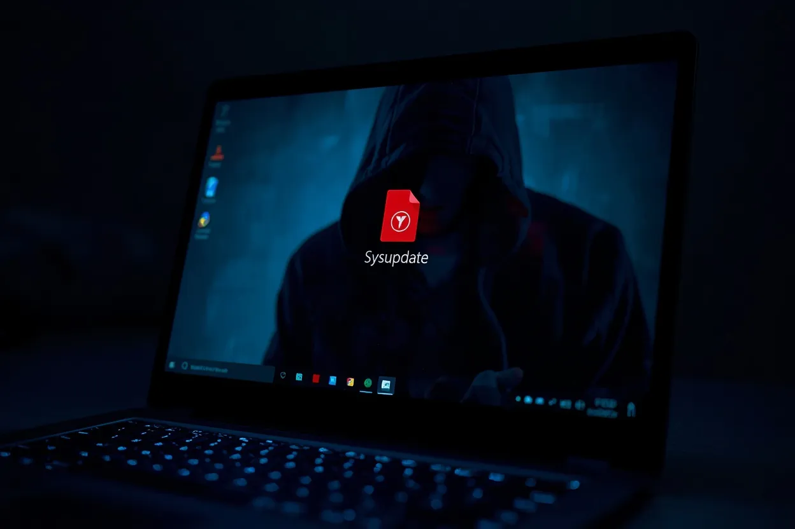

Warning: Hackers Are Sending Fake JPEG Photos That Silently Take Over Your Windows PC


Security researchers at Cyfirma have uncovered a cyberattack campaign called Operation SilentCanvas that uses fake JPEG image files to silently take over Windows PCs. The attack disguises a malicious PowerShell script as a harmless photo, and once a victim opens it, hackers gain complete remote control of the machine without triggering any visible alert.
What makes this particularly dangerous is how ordinary the entry point looks. A file named sysupdate.webp arrives like any other image. Nothing about it raises an obvious red flag. But it carries no image data at all — just a script engineered to quietly set up a backdoor while the victim sees nothing unusual on screen.
Table of Contents
- What Is Operation SilentCanvas and Why Security Experts Are Alarmed
- The Fake JPEG Trick: How a Photo File Installs a Backdoor on Your PC
- Stage by Stage: Exactly What Happens After You Open the File
- How SilentCanvas Steals Your Password Before Windows Even Logs You In
- How to Check If Your Windows PC Has Been Compromised
- What You Must Do Right Now to Stay Protected
- Frequently Asked Questions
What Is Operation SilentCanvas and Why Security Experts Are Alarmed
Operation SilentCanvas is a multi-stage intrusion campaign identified by Cyfirma's threat research team. It targets Windows systems specifically and uses a chain of disguised files to achieve persistent, undetected access. The name reflects its core technique — operating silently within a hidden environment the victim never sees.
What alarms researchers isn't just the attack itself. It's the level of deliberate engineering behind it. The malware avoids writing dangerous strings directly to disk, reconstructing commands at runtime instead — a method designed specifically to evade signature-based antivirus tools. The attackers also abuse csc.exe, Microsoft's own .NET compiler, to build components on the victim's machine rather than delivering pre-built executables that security tools might flag.
Honestly, the sophistication here suggests this isn't a low-skill operation. The decision to abuse a trusted Windows binary like csc.exe is a technique more commonly associated with targeted attacks than opportunistic malware campaigns.
The Fake JPEG Trick: How a Photo File Installs a Backdoor on Your PC
The initial infection file, sysupdate.webp, exploits a simple and effective social engineering assumption — people trust image files. JPEG is a universally familiar format associated with harmless photos. Most users would open it without hesitation, especially if it arrives from what appears to be a trusted source.
But sysupdate.webp contains no image. Open it in any photo viewer and it fails to render. What it does contain is a PowerShell script that immediately begins executing when the file is run. The script sets up a staging environment on the victim's machine and reaches out to attacker-controlled infrastructure to download the next stage of the attack.
A second file named access.webp is then downloaded and executed entirely in memory — never written to disk in a form that standard antivirus tools would catch. This fileless execution technique is specifically chosen to avoid leaving traces that security software scans for.
Also Read
More Tech stories →Stage by Stage: Exactly What Happens After You Open the File
The attack unfolds across several carefully sequenced stages after sysupdate.webp is opened. First, the embedded PowerShell script establishes a staging environment and contacts the attacker's server. Then access.webp is downloaded and run in memory, avoiding disk-based detection entirely.
Using csc.exe — a legitimate Windows tool — the malware compiles a custom launcher called uds.exe directly on the victim machine. This launcher then hijacks the ms-settings protocol registry key, a technique used to elevate privileges without triggering standard User Account Control prompts.
From there, the malware creates a hidden desktop session that runs completely outside the logged-in user's visible environment. Tools and commands execute in this hidden space with no visible window or notification. A persistent Windows service named OneDriveServers is also installed, ensuring the malware automatically restarts every time the PC boots. The final payload dropped is a trojanized version of ScreenConnect — a legitimate remote desktop tool — which gives the attacker persistent, silent remote access to the machine from anywhere in the world.
Key Takeaways
- Operation SilentCanvas spreads through a fake JPEG file named sysupdate.webp that contains a hidden PowerShell script — not image data.
- The malware abuses Microsoft's own csc.exe compiler and the ms-settings registry key to install silently without triggering UAC alerts.
- A Windows service named OneDriveServers ensures the malware survives reboots and maintains persistent attacker access.
How SilentCanvas Steals Your Password Before Windows Even Logs You In
One of the most alarming capabilities Cyfirma documented is credential interception at the Windows login screen itself — meaning the malware captures your username and password before authentication is even completed. This happens because the malware installs a component that hooks into the Windows credential provider chain, intercepting what you type at the lock screen and sending it silently to the attacker.
The implication is serious. Even if you change your password after discovering an infection, the attacker may already have the new credentials if the malware's login screen hook is still active. Additionally, the malware can create hidden local administrator accounts, giving attackers a secondary access route that persists even if the original compromised account is locked down.
This two-track approach — stolen credentials plus a hidden admin account — means simply changing a password isn't enough to recover from this infection. The hidden account remains until it's specifically found and removed.
How to Check If Your Windows PC Has Been Compromised
Cyfirma provided specific indicators of compromise that Windows users and IT teams can check for directly. The most reliable signs of an active SilentCanvas infection are:
- Presence of files named sysupdate.webp or access.webp in unusual locations such as temp folders or user profile directories.
- A Windows service named OneDriveServers appearing in Services (open via services.msc) — this is not a legitimate Microsoft service despite the name.
- Unexpected modifications to the ms-settings protocol registry key, viewable via Registry Editor under HKEY_CLASSES_ROOT\ms-settings.
- Presence of uds.exe in non-standard locations such as AppData or Temp folders.
- Unexpected instances of ScreenConnect or ConnectWise remote access software installed without IT authorization.
If you find any of these indicators, treat the machine as compromised. Disconnect it from the network immediately and seek professional remediation rather than attempting to clean it while still connected.
What You Must Do Right Now to Stay Protected
The most effective prevention is also the simplest: never open a JPEG or image file you weren't expecting, especially files with generic names like sysupdate, update, or photo. Cyfirma's security recommendations specifically include blocking or monitoring execution of csc.exe and ComputerDefaults.exe in environments where they aren't needed for legitimate purposes.
For Windows 10 and 11 users, enabling Attack Surface Reduction rules via Microsoft Defender — particularly the rule that blocks abuse of exploited vulnerable signed drivers — adds a layer of protection against this class of attack. IT administrators should also add detection rules for any service named OneDriveServers appearing on endpoints and set alerts for unexpected ms-settings registry modifications.
Keep Windows fully patched, enable tamper protection in Microsoft Defender, and treat any file arriving via email or messaging apps as potentially hostile until verified — regardless of its extension.
Frequently Asked Questions
What is Operation SilentCanvas malware?
Operation SilentCanvas is a cyberattack campaign discovered by Cyfirma researchers that targets Windows systems using fake JPEG image files. The file named sysupdate.webp contains a hidden PowerShell script that installs a backdoor, giving attackers full remote control of the infected machine without the victim's knowledge.
How does a JPEG file install malware on Windows without being detected?
The file carries a .webp extension to appear harmless but contains no actual image data — only a PowerShell script. The script reconstructs dangerous commands at runtime rather than storing them in plain text, which bypasses traditional antivirus signature detection. A second payload runs entirely in memory, leaving no standard disk trace to scan.
What does the sysupdate.webp file actually do to your computer?
Opening sysupdate.webp triggers a PowerShell script that downloads access.webp, runs it in memory, and uses Microsoft's csc.exe compiler to build a launcher named uds.exe. The malware then hijacks the ms-settings registry key, creates a hidden desktop session, and installs a persistent Windows service named OneDriveServers that survives reboots.
How does the SilentCanvas malware survive PC restarts?
The malware installs a persistent Windows service named OneDriveServers — chosen specifically because the name resembles a legitimate Microsoft service. This service automatically restarts the malware every time the computer boots, ensuring continuous attacker access even after the machine is shut down and turned back on.
What is the trojanized ScreenConnect tool used by attackers?
ScreenConnect, also known as ConnectWise Control, is a legitimate remote desktop tool used by IT support teams worldwide. Attackers deploy a trojanized version of it as the final payload in Operation SilentCanvas, allowing them to silently connect to and fully control the infected Windows machine from anywhere without the victim ever seeing a notification.
Which Windows system files does Operation SilentCanvas abuse?
The malware abuses csc.exe — Microsoft's own .NET compiler — to build the custom uds.exe launcher on the victim's machine. It also hijacks the ms-settings protocol registry key to elevate privileges silently and creates a hidden desktop environment to execute tools outside the logged-in user's visible session.
How do I remove Operation SilentCanvas malware from Windows?
Check for and delete files named sysupdate.webp or access.webp in temp and profile folders. Open services.msc and delete any service named OneDriveServers. Check the ms-settings registry key for unauthorized entries. Remove any unauthorized ScreenConnect installation. Run a full updated antivirus scan and consider a clean Windows reinstall if infection is confirmed.
Conclusion
Operation SilentCanvas is a reminder that the most effective attacks often enter through the most trusted-looking doors. A JPEG file is about as non-threatening as a file type gets — and that's precisely why it was chosen. The campaign demonstrates real technical sophistication: fileless execution, abuse of legitimate Windows tools, login screen credential theft, and a persistence mechanism disguised as a Microsoft service.
The specific indicators Cyfirma published — sysupdate.webp, the OneDriveServers service, uds.exe, and ms-settings registry modifications — give users and IT teams something concrete to check for right now. If you work in IT or manage Windows endpoints, adding detection rules for these specific markers is worth doing today, not after an incident forces the issue.
Sarah Mitchell
Senior Editor
Experienced journalist bringing you accurate, well-researched stories. Follow for the latest updates and in-depth coverage.
Leave a Comment